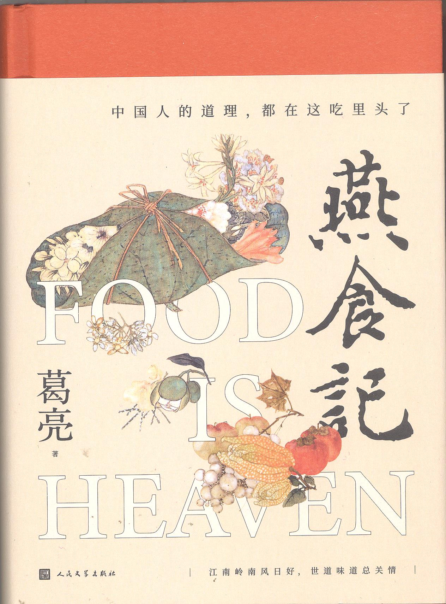

两 代 厨 人 · 三 地 流 转
葛亮 · 一部岭南饮食的长卷

《燕食记》是葛亮以岭南饮食为载体写就的长篇小说。书中两代厨人的命运、近百道粤菜与本帮菜、 广府—香港—上海三地的流转,共同筑起一座可以「被走进」的文化空间。 这个网站把这本书打开——让你沿着人物与菜品两条线索,在其间慢慢游走。 读过的人,可当作一份延伸阅读的地图;未读的人,愿它是一扇引你入席的门。
原籍南京,现居香港。香港大学中文系博士,长年任教于高校。其写作多以家族记忆、城市变迁与中国文化为题, 文字典雅,糅合古典笔法与现代叙事,被视为华语文坛「新古典」一脉的代表声音。著有长篇小说《朱雀》《北鸢》《燕食记》, 小说集《瓦猫》《问米》等,曾获鲁迅文学奖等多项华语文学奖项。 《燕食记》是他以岭南与江南饮食为载体的长篇近作——借两代厨人的际遇,写下半部近代南方的世情画卷。